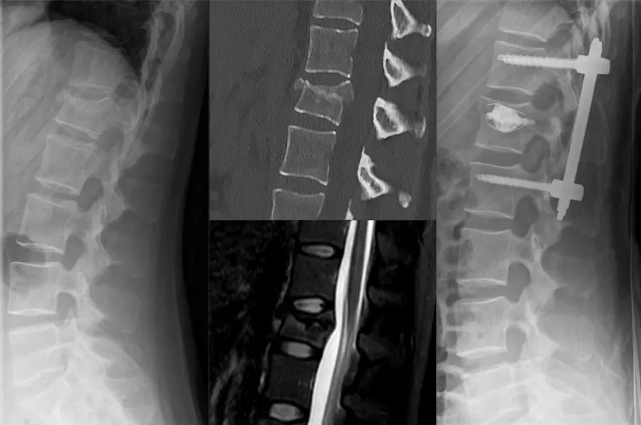

DX.2 — Fracture burst thoraco-lombaire
1. Définition
En 2013, le sous-type de burst incomplet (A3) décrit une fracture d’un seul plateau avec atteinte du mur postérieurvaccaro2013.
Ce canal rachidien entre dans cette définition, et la légende de la figure 6 le montre sur la coupevaccaro2013.
Ce burst complet (A4) atteint les deux plateaux et le mur postérieur du corpsvaccaro2013.
Une fissure verticale de la lame accompagne souvent ces formes, sans signifier une rupture de la bande de tensionvaccaro2013.
Le groupe AOSpine a publié ces deux sous-types dans Spine, volume 38, pages 2028 à 2037vaccaro2013.
Cette revue suisse du 21 décembre 2005 décrit le burst classique par la lésion du mur vertébral postérieurrms2005-tl.
2. Épidémiologie (Suisse, puis Europe)
Aucune série suisse lue ne montre la part du seul burst parmi les fractures du rachis.
Cette cohorte germanophone de 865 blessés compte 548 fractures de type A, soit 63,3 %reinhold-de.
Ce type A réunit le tassement et le burst, sans rang interne entre ces deux diagnosticsreinhold-de.
Les distractions de type B y sont 181, soit 20,9 %, et les rotations de type C 136, soit 15,7 %reinhold-de.
La jonction, de la onzième thoracique (T11) à la deuxième lombaire (L2), rassemble 68,8 % des fracturesreinhold-de.
Huit services allemands et autrichiens ont constitué ce dénominateur, qui n’est pas un registre suissereinhold-de.
Parmi les 733 opérés, le type A représente 424 patients, soit 57,8 %reinhold-en.
La voie postérieure seule concerne 380 de ces opérés, soit 51,8 %reinhold-en.
La voie antérieure seule en concerne 34, soit 4,6 %, et la double voie 319, soit 43,5 %reinhold-en.
À la charnière T11-L2, 47 % des opérés ont reçu un abord postérieur seul, et autant une double voiereinhold-en.
Le tableau d’une revue allemande de 2018 indique 20,8 % de bursts incomplets et 33,8 % de bursts completsspiegl2018.
La note de ce tableau rattache ces deux parts à Merkel, et non au dénominateur de Reinholdspiegl2018.
La même revue retient environ 8000 fractures thoraciques et lombaires graves chaque année en Allemagnespiegl2018.
Elle relève une paraplégie complète dans 2 % des fractures de type A et un déficit incomplet dans 11 %spiegl2018.
Le comité mondial retient environ 30 fractures thoraco-lombaires pour 100000 habitants, ostéoporose comprisewfns2021.
Un registre suédois de 13496 séjours, de 1997 à 2010, compte environ 30 fractures pour 100000 habitantswfns2021.
Les hommes y comptent 62 %, la route 38,7 % et les chutes de hauteur 23,8 %wfns2021.
Dans la cohorte européenne des blessés graves, 9,6 % des 250584 adultes avaient une fracture ou une luxation du rachistarn.
Le segment lombaire représentait 37,09 % de ces fractures et le segment thoracique 28,06 %tarn.
Une enquête de la société allemande du rachis (DWG) a reçu 131 réponses de chirurgiensgaudin2026.
Quatre participants venaient de Suisse, soit 3 %, et 125 d’Allemagnegaudin2026.
Dans 41 % des cas proposés, l’abord recommandé était dorsal, soit 448 choixgaudin2026.
L’abord dorsoventral a été retenu dans 33 % des cas, soit 361 choix, et le traitement conservateur dans 26 %gaudin2026.
Cette enquête porte sur le burst incomplet, et elle ne classe pas le burst devant le tassementgaudin2026.
Le seuil d’angle du plateau associé à une recommandation opératoire était supérieur à 12°gaudin2026.
L’aire sous la courbe de ce seuil valait 83 %, avec un p de 0,028gaudin2026.
Une destruction du corps supérieure à 50 %, jointe à cet angle, augmentait l’abord combinégaudin2026.
Parmi les répondants, 97 ont complété les dix cas, soit 74 %gaudin2026.
Ces pourcentages décrivent des choix de cas, non une directive suisse applicable à tout burstgaudin2026.
Une autre enquête citée dans le même article indique une chirurgie dans 41 % des bursts incomplets et dans 70 % des bursts completsgaudin2026.
Ce second 41 % n’est pas le 41 % d’abords dorsaux de l’enquête DWGgaudin2026.
Fermer3. Physiopathologie
Cette charge axiale provoque le recul du mur postérieur vers le canalvaccaro2013.
Le recul osseux rétrécit le fourreau, ce qui relie la fracture au déficit radiculaire ou médullairerms2005-tl.
La distance interpédiculaire peut augmenter sous la même compression, selon la description du sous-type A3vaccaro2013.
La bande de tension postérieure reste continue dans le burst de type Avaccaro2013.
Si cette bande cède, la lésion se reclasse en distraction et quitte ce diagnosticvaccaro2013.
Le dessin en couleur de la moelle montre le cône vers le carré 3, à hauteur lombaire hauteimage-moelle.
Un burst de la jonction peut menacer ce cône ou les racines, selon l’étage exactimage-moelle.
Ce carré 1 montre la moelle cervicale haute et le carré 2 la moelle thoraciqueimage-moelle.
On regarde d’abord le trajet jaune de la moelle, puis les trois carrés du fichier annotéimage-moelle.
Ce carré 2 montre la moelle au thorax, loin d’un burst lombaire basimage-moelle.
Ce carré 3 descend vers le cône, là où un burst de la première lombaire (L1) peut comprimer les dernières fibres médullairesimage-moelle.
L’image ne mesure pas le rétrécissement du canal. La coupe du patient le mesurerms2005-tl.

 Fermer
Fermer| Perturbation | Ce qui la montre | Ce qui la corrige |
|---|---|---|
| Recul du mur postérieur | Coupe sagittale | Décompression si le déficit progresse |
| Rétrécissement du canal au-delà de 50 % | Mesure sur la coupe | Discussion opératoire selon la revue suisse |
| Bande de tension rompue | Imagerie par résonance magnétique (IRM) des ligaments | Reclassement hors du burst de type A |
| Cyphose au-dessus de 20° | Cliché de profil, debout si possible | Fixation discutée avec le déficit |
4. Démarche diagnostique
Ce déficit qui progresse avec une compression osseuse passe avant la discussion du pourcentage de canalrms2005-ind.
Cette situation concerne la lésion médullaire, qui porte le rang de gravité le plus haut du lot.
La luxation vertébrale reste une indication absolue, distincte du burst même quand les deux coexistentrms2005-ind.
La lésion ligamentaire pure est une indication absolue et elle reste hors des dix diagnosticsrms2005-ind.
Le tassement cunéiforme (A1) laisse le mur postérieur continu, à l’inverse du burstvaccaro2013.
Ce cliché de profil peut montrer un coin dans les deux cas. La coupe les séparevaccaro2013.
La flexion-distraction atteint les éléments postérieurs. Le burst de type A ne le fait pasvaccaro2013.
L’isthme de la deuxième cervicale (C2) ne se règle pas par les seuils de canal lombairerms2005-cx.
Il n’est opéré que lorsque les clichés dynamiques montrent une instabilité, et il reste hors des dixrms2005-cx.
L’écart des masses de la première cervicale (C1) au-delà de 7 mm concerne le ligament transverse, non ce burstrms2005-c1.
5. Anamnèse ciblée et drapeaux rouges
On fait raconter la hauteur de la chute et la décélération, avant de parler du corsettarn.
La chute de plus de 2 m augmente le rapport de cotes de fracture ou de luxation jusqu’à 4,17tarn.
Dans le groupe opéré germanophone, la route représente 27,1 % des mécanismes et la chute banale 15,8 %reinhold-de.
Une douleur en ceinture ou une faiblesse d’un pied font chercher une racine, pas seulement le corps fracturé.
L’horaire d’un déficit progressif compte, et la revue en fait une indication absoluerms2005-ind.
Un choc banal après 65 ans reste hors du cadre traumatique retenu par la revue allemande de 2018spiegl2018.
Le dictionnaire EUROSPINE, approuvé en 2020, décrit l’ostéoporose et la tumeur comme fracture pathologiqueeurospine2020.
Cette douleur typique se manifeste sur l’épineuse de l’étage rompu, souvent la première lombaire (L1) ou la douzième thoracique (T12)reinhold-de.
Elle augmente au lever, et l’angle mesuré debout dépasse de 7° l’angle couchéspiegl2018.
Une irradiation dans un dermatome rend le symptôme radiculaire, ce qui change le score neurologiquetlics2005.
L’absence de choc suffisant rend le tableau atypique pour ce diagnostic traumatiquespiegl2018.
Fermer| Drapeau | Ce qu’il signifie | Action |
|---|---|---|
| Déficit qui s’aggrave | Compression neurologique évolutive | Indication opératoire absolue |
| Écart interépineux | Bande de tension peut-être rompue | Ne pas rester sur le seul burst de type A |
| Défense abdominale | Viscère possiblement lésée par le même choc | Coupe du tronc et réanimation d’abord |
| Chute banale après 65 ans | Fracture possiblement pathologique | Ne pas appliquer tel quel le seuil traumatique |
Les Hôpitaux universitaires de Genève (HUG) retiennent une fréquence respiratoire inférieure à 10 ou supérieure à 30hug-vit.
Un pouls supérieur à 120, l’absence de pouls radial ou l’absence de réponse motrice sont des menaces vitaleshug-vit.
L’oxygénation reste prioritaire sur la position du couhug-vit.
L’immobilisation ne doit pas retarder un geste salvateurhug-preh.
Pour le rachis dorsal et lombaire, aucun score clinique validé ne permet d’éviter l’imageriehug-log.
Fermer6. Examen physique ciblé, région par région
On observe la statique avant de palper, et le testing moteur vient après.
Le normal est une ligne d’épineuses sans écart et une force conservée aux membres inférieurs.
Le pathologique est l’épineuse douloureuse avec un niveau sensitif ou une parésierms2005-ind.
De profil, on cherche une angulation à la charnière entre le gril costal et les lombes.
On palpe T11, T12, la première lombaire (L1) et L2, une épineuse après l’autrereinhold-de.
Le normal est l’absence de ressaut entre deux épineuses.
Le pathologique est la douleur vive d’une épineuse, qui indique l’étage à couper sans mesurer le canalvaccaro2013.
Un écart fait suspecter la bande de tension et fait sortir le classement du burst isolérms2005-ind.
FermerAu-dessus de T11, la cage stabilise le segment, et l’on palpe quand même chaque épineuse jusqu’à la première thoracique (T1).
Le normal est une amplification thoracique symétrique.
Le pathologique est une douleur sternale associée, qui peut accompagner un burst haut et une contusion pulmonairehug-vit.
On ausculte les bases avant de discuter un corsethug-vit.
FermerSous L2, on palpe la troisième lombaire (L3), la quatrième (L4) et la cinquième (L5).
Le normal est une lordose indolore à la percussion douce.
Le pathologique est une radiculalgie basse avec un déficit d’un releveur ou d’un fléchisseur.
Cette revue admet un traitement conservateur d’une fracture lombaire instable chez un patient mince sans déficitrms2005-tl.
En cas de fixation, on la garde courte afin de laisser des segments mobilesrms2005-tl.
FermerOn cote la force avant les réflexes.
Le normal est une force symétrique, un toucher conservé et l’absence de niveau.
Le pathologique est un niveau, une parésie ou une anesthésie en sellerms2005-ind.
Environ 3 % des déficits d’abord complets récupèrent dans les 24 premières heuresrms2005-init.
Passé ces 24 heures, un déficit qui reste complet est de mauvais pronostic moteurrms2005-init.
FermerOn palpe l’abdomen après avoir sécurisé la ventilationhug-vit.
Le normal est un ventre souple, sans douleur à la décompression.
Le pathologique est la défense ou un hématome des flancs, qui passent avant le vissagerms2005-init.
Un roulis de 20 à 30° suffit pour voir le dos, et le tour complet est inutilehug-log.
Le transfert utilise une civière à aubeshug-log.
Fermer7. Approche syndromique
7.1 Burst incomplet sans déficit
Ce premier syndrome réunit un seul plateau fracturé, un mur postérieur atteint et un examen neurologique normalvaccaro2013.
Le signe fonctionnel est la douleur mécanique. Le signe physique est l’épineuse douloureuse sans écartspiegl2018.
Le geste est la coupe sagittale, qui montre le mur que le cliché laisse devinervaccaro2013.
Ce score compte alors 2 points de morphologie, 0 point neurologique et 0 point ligamentairetlics2005.
Ce total de 2 reste sous le seuil de 3, qui oriente vers un traitement non opératoire dans la table de 2005tlics2005.
7.2 Burst avec rétrécissement important
Ce deuxième syndrome garde le mur rompu et ajoute un canal rétréci de plus de 50 %, ou une cyphose de plus de 20°rms2005-tl.
Cette revue suisse discute alors la chirurgie, en l’absence de contre-indication médicalerms2005-tl.
Jusqu’à 33 % de rétrécissement, elle décrit une chirurgie postérieure avec réduction indirecterms2005-tl.
Au-delà de 66 % de rétrécissement, elle demande un abord antérieur pour décomprimerrms2005-tl.
7.3 Burst et déficit
Ce troisième syndrome ajoute un déficit à la fracture du murrms2005-ind.
Un déficit incomplet cote 3 points, et avec 2 points de burst le total atteint 5 si le ligament est intacttlics2005.
Un total de 5 points ou plus oriente vers la chirurgie dans ce scoretlics2005.
Si le déficit progresse, la revue suisse parle d’indication absolue, au-delà du scorerms2005-ind.
7.4 Sujet âgé et choc insuffisant
Ce quatrième syndrome concerne le patient de plus de 65 ans ou la chute banale, exclus de la revue de 2018spiegl2018.
Ce mécanisme ne reste pas celui du burst traumatique de type A3 ou A4vaccaro2013.
On ne crée pas un onzième diagnostic pour l’os fragile. On dit que le cas sort de cette définitioneurospine2020.
8. Diagnostic positif et critères
Le diagnostic positif exige un choc, un mur postérieur atteint et au moins un plateau fracturévaccaro2013.
Un seul plateau avec ce mur correspond au sous-type A3. Les deux plateaux correspondent au sous-type A4vaccaro2013.
Il ne suffit pas d’un coin radiologique. Il faut la coupevaccaro2013.
Il ne suffit pas d’une fissure verticale de lame pour parler d’une bande de tension rompuevaccaro2013.
L’accord interobservateur sur le type A atteint un kappa de 0,72 dans l’étude de 2013vaccaro2013.
Sur tous les sous-types, le kappa reste de 0,64, et l’accord complet porte sur 14 des 40 cas, soit 35 %vaccaro2013.
Ce score de gravité thoraco-lombaire (TLICS) compte 2 points pour le burst et 1 point pour la compression simpletlics2005.
Le ligament intact vaut 0, le ligament suspect 2 et le ligament rompu 3tlics2005.
Un total de 4 reste indistincttlics2005.
Ni le corset ni la fixation n’en découlent seulstlics2005.
Cette revue suisse retient 20° de cyphose, 50 % de canal ou 50 % de perte de hauteur antérieurerms2005-tl.
L’enquête DWG, elle, a trouvé un seuil d’angle de plateau supérieur à 12° pour recommander une opérationgaudin2026.
Ces deux seuils ne disent pas la même chose. L’un vient d’une revue suisse de 2005, l’autre d’une enquête allemanderms2005-tl.
Un burst neurologiquement intact et à ligament sain totalise 2, 0 et 0tlics2005.
Ce total de 2 reste dans la zone non opératoire de la table, fixée à 3 points ou moinstlics2005.
Le même burst avec un déficit incomplet et un ligament sain totalise 2 plus 3 plus 0, soit 5tlics2005.
Ce total de 5 entre dans la zone opératoiretlics2005.
La queue de cheval cote 3, comme le déficit incomplet, et non comme le déficit complet qui cote 2tlics2005.
Fermer9. Examens complémentaires
La morphologie de référence se lit sur la tomodensitométrie (TDM), base du système de 2013vaccaro2013.
En première intention, après un choc modéré, la radiographie debout reste utile si la douleur le permetspiegl2018.
Dès qu’un burst est suspecté, l’IRM devient souhaitable en plus de la coupe, selon la revue de 2018spiegl2018.
Chez la personne enceinte, aucune dose en milligray ne figure dans les sources de ce coursrms2005-init.
L’IRM se discute avec le radiologue lorsque la question porte sur les ligamentsrms2005-init.
Avant 18 ans, cette revue allemande ne généralise pas ce qu’elle conclut chez l’adultespiegl2018.
L’allergie à l’iode concerne le contraste. L’os se voit souvent sans injectionvaccaro2013.
Si l’IRM est impossible, la coupe et, plus tard, les clichés dynamiques cherchent l’instabilité ligamentairerms2005-cx.
La planche de Hellerhoff, du 11 mars 2022, montre un burst de L1 sous licence de partageimage-burst.
On regarde d’abord le cliché brut, puis la copie annotée, sans inventer un repère absent du fichierimage-burst.
Ce carré 1 reste sur le cliché de profil, au niveau du corps fracturéimage-burst.
Ce carré 2 reste sur la coupe sagittale, sur le mur postérieur du corpsimage-burst.
Ce carré 2 est le repère validé du reculimage-burst.
Il ne se place pas sur un étage voisinimage-burst.
Ce carré 3 reste sur l’IRM, dans le canal, en regard du fourreauimage-burst.
Ce carré 4 reste sur le cliché après vissage, au niveau du corps entre les visimage-burst.
Ce cliché décide qu’il y a un recul du mur et un montage. Il ne donne pas à lui seul le pourcentage de canalrms2005-tl.

 Fermer
Fermer| Résultat | Signification | Conduite |
|---|---|---|
| Mur postérieur rompu, un seul plateau | Burst incomplet | Poursuivre avec l’angle, le canal et le déficit |
| Deux plateaux et mur rompu | Burst complet | Même logique, gravité osseuse plus large |
| Canal rétréci de plus de 66 % | Décompression antérieure selon la revue de 2005 | Ne pas se contenter d’une voie postérieure |
| Canal rétréci jusqu’à 33 % | Réduction postérieure indirecte décrite par la revue | Vérifier l’absence de déficit progressif |
Jusqu’à preuve du contraire, tout polytraumatisé est tenu pour porteur d’une fracture instablerms2005-init.
Cette revue pratique une coupe du tronc d’emblée chez ces patients, ce qui voit aussi le rachisrms2005-init.
10. Arbre décisionnel
- Si la fréquence respiratoire est inférieure à 10 ou supérieure à 30, on oxygène avant de classer le bursthug-vit.
- Si le pouls dépasse 120, la réanimation passe avant le vissagehug-vit.
- Si le déficit progresse avec une compression, l’indication opératoire est absoluerms2005-ind.
- Si les épineuses s’écartent sans que le corps explique l’instabilité, on retient une lésion ligamentaire purerms2005-ind.
- Si le mur postérieur est continu, le diagnostic quitte le burst et rejoint le tassementvaccaro2013.
- Si le canal dépasse 66 % de rétrécissement, la revue de 2005 demande un abord antérieurrms2005-tl.
- Si le canal reste jusqu’à 33 % et que le déficit ne progresse pas, elle décrit une voie postérieurerms2005-tl.
- Si la cyphose dépasse 20°, ou en cas de perte de hauteur antérieure supérieure à 50 %, la revue discute la chirurgierms2005-tl.
- Si le patient a plus de 65 ans et que le choc est banal, on ne copie pas cet arbre traumatiquespiegl2018.
11. Prise en charge
11.A But
Le but immédiat est l’absence de déficit nouveau et un canal qui ne se ferme pas davantagerms2005-tl.
Le but différé est une cyphose qui ne dépasse pas 20° quand la revue suisse sert de seuilrms2005-tl.
Cette douleur se contrôle avec une dose écrite dans l’information professionnelle suisse (AIPS).
11.B Moyens
On libère la voie aérienne et on oxygène avant d’aligner le rachishug-vit.
On maintient la tête à la main pendant l’intubationhug-vit.
La minerve rigide reste indiquée chez le patient intubé dans ce protocolehug-vit.
Quand une décompression est décidée pour une lésion médullaire, le consensus européen de 2024 la situe autant que possible dans les 24 heureswses2024.
Ce délai vient après le contrôle des détresses vitales. Il ne s’applique pas à un burst stable sans déficitwses2024.
Pendant la chirurgie d’urgence ou une hémorragie menaçante, la pression artérielle moyenne (PAM) visée dépasse 85 mmHgwses2024.
Cette cible de 85 mmHg n’est pas le but du patient qui n’a ni choc hémorragique ni geste spinal urgentwses2024.
Les corticoïdes à haute dose, y compris le schéma des études nord-américaines (NASCIS), ne reçoivent aucun milligramme iciwses2024.
Ce consensus de 2024 recommande de ne pas les administrer dans la lésion médullaire et le polytraumatismewses2024.
Cette revue de 2005 limitait déjà un tel essai aux huit premières heures et penchait vers le tortrms2005-ster.
Cette revue du 13 août 2014 ne préconise plus cette corticothérapierms2014.
L’abstention reste hors AIPS.
Aucune fiche de corticoïde ne figure dans ce cours pour un milligramme.
La compression pneumatique intermittente se discute tôt après une atteinte médullairewses2024.
FermerCette revue de 2018 ne retient aucun article sur l’antalgie du burst traumatiquespiegl2018.
Les doses qui suivent viennent des fiches suisses de la moléculeaips-58530.
Cette douleur légère à modérée, douleur post-traumatique comprise, peut relever du paracétamolaips-58530.
Cette douleur forte qui résiste aux non-opioïdes peut relever de la morphine, hors contre-indication écriteaips-53571.
L’énoxaparine ne se généralise pas à tout burst alité. Elle suit les indications de sa ficheaips-49456.
Paracétamol Stada, numéro 58530, indique la douleur post-traumatique parmi les douleurs légères à modéréesaips-58530.
Au-dessus de 40 kg, le plafond journalier reste 4000 mg, y compris chez l’adolescent de plus de 12 ansaips-58530.
La prise va de 500 à 1000 mg, séparée de 4 à 8 heures, sans dépasser 4 g soit 8 comprimésaips-58530.
Entre 9 et 12 ans, pour 30 à 40 kg, la prise va de 400 à 600 mg et le jour ne dépasse pas 2000 mgaips-58530.
Ce plafond de 2000 mg vaut 2 g, soit 4 comprimés, et l’usage continu sans avis s’arrête à 3 joursaips-58530.
Entre 10 et 50 ml/min de clairance, l’intervalle devient 6 heures et le maximum 3000 mg par jouraips-58530.
Sous 10 ml/min, l’intervalle devient 8 heures et le maximum 2000 mg par jouraips-58530.
Le sillon du comprimé permet de faciliter la déglutitionaips-58530.
Il ne permet pas de prendre une demi-doseaips-58530.
| Grossesse | Les études épidémiologiques sur le développement neurologique des enfants exposés au paracétamol in utero ne présentent pas de résultats clairs. Le risque de lésions fonctionnelles et organiques, de malformations et de troubles de l'adaptation lorsque du paracétamol est pris pendant la grossesse à une posologie correcte est actuellement considéré comme faible. En cas de nécessité clinique, le paracétamol peut être pris pendant la grossesse. Toutefois, il convient d'utiliser la dose efficace la plus faible pendant la durée la plus courte possible et à la fréquence la plus basse possible. |
|---|---|
| Allaitement | Le paracétamol passe dans le lait maternel. Bien que l'utilisation du paracétamol soit considérée comme compatible avec l'allaitement, la prudence est de mise lors de l'utilisation du Dafalgan pendant l'allaitement. |
| Contre-indication majeure | La fiche contre-indique l'hypersensibilité, les troubles hépatiques graves, l'hépatite aiguë et la maladie de Gilbert. |
Morphine HCl Bichsel, numéro 53571, s’adresse à une douleur moyennement forte à forteaips-53571.
En aigu, la voie sous-cutanée est de 10 mg pour 70 kg toutes les 4 à 6 heuresaips-53571.
Les variations admises vont de 5 à 20 mgaips-53571.
Par voie intraveineuse, la titration est de 2,5 mg toutes les 5 minutes, injectée lentementaips-53571.
La perfusion commence par 5 à 15 mg en 30 minutes, puis poursuit à 2,5 ou 5 mg par heureaips-53571.
La naloxone et un moyen de ventiler restent prêts, en raison du risque respiratoire écrit dans la ficheaips-53571.
Le traumatisme crânien et l’hypertension intracrânienne contre-indiquent cette morphineaips-53571.
Aucune dose ne lui est alors administréeaips-53571.
Le nouveau-né ventilé reçoit 10 µg par kg et par heure, sans dépasser 15aips-53571.
S’il respire seul, la fiche n’admet la morphine que sous surveillance intensive, à 5 à 7 µg par kg et par heureaips-53571.
L’insuffisance rénale sévère ou hépatique sévère contre-indique la moléculeaips-53571.
| Grossesse | Morphine HCl Bichsel ne doit pas être administré pendant la grossesse, sauf en cas de nécessité absolue. Une dépression respiratoire est possible chez le nouveau-né. |
|---|---|
| Allaitement | La morphine passe dans le lait maternel. Il est absolument contre-indiqué d'allaiter. |
| Contre-indication majeure | La fiche contre-indique la dépression respiratoire, l'iléus paralytique, l'insuffisance hépatique ou rénale sévère, le traumatisme crânien et l'hypertension intracrânienne. |
Clexane, numéro 49456, écrit une prophylaxie pour certaines chirurgies et pour trois maladies aiguësaips-49456.
À risque chirurgical modéré, la dose est de 20 mg, soit 2000 UI, environ 2 heures avant le gesteaips-49456.
En orthopédie à haut risque, la dose est de 40 mg, soit 4000 UI, avec une première injection 12 heures avantaips-49456.
La durée moyenne suit le risque et va de 7 à 10 jours, jusqu’à la marche selon la ficheaips-49456.
Après une orthopédie, 40 mg par jour pendant 3 semaines s’ajoutent au traitement initialaips-49456.
L’alitement médical visé comprend l’insuffisance cardiaque de stade III ou IV de la New York Heart Association (NYHA)aips-49456.
Il comprend aussi l’insuffisance respiratoire aiguë, ou une infection aiguë avec un autre facteur de risqueaips-49456.
L’affection rhumatologique aiguë ne reste dans l’indication qu’avec un autre facteur de risqueaips-49456.
Hors ces cadres, la prophylaxie d’un burst alité est hors AIPS. Aucune dose de remplacement n’est écrite.
Chez 8 femmes enceintes valvulaires, 1 mg/kg deux fois par jour a précédé des thromboses et le décès de la mère et du fœtusaips-49456.
| Grossesse | L'énoxaparine ne doit être utilisée pendant la grossesse que si le médecin a établi un réel besoin clinique. Clexane multi doit être utilisé avec prudence pendant la grossesse, car l'alcool benzylique peut traverser le placenta. Chez 8 femmes enceintes porteuses d'une prothèse valvulaire, des caillots sont survenus après 1 mg/kg deux fois par jour et ils ont entraîné le décès de la mère et du fœtus.aips-49456 |
|---|---|
| Allaitement | Les données sur l'utilisation de l'énoxaparine pendant l'allaitement sont limitées. Par mesure de précaution, l'allaitement n'est pas recommandé. Clexane multi contient de l'alcool benzylique comme agent conservateur et ne doit pas être utilisé chez le nouveau-né. |
| Contre-indication majeure | La fiche contre-indique l'hémorragie active, l'accident vasculaire cérébral hémorragique récent et la thrombocytopénie à l'héparine des 100 derniers jours. |
Le moyen non médicamenteux d’un burst stable sous les seuils peut être le corset, sans en faire une obligation d’alignementspiegl2018.
Trois essais lus dans la revue de 2018 soutiennent la remise en charge précocespiegl2018.
Le corset peut servir à la douleur. Il ne prouve pas un meilleur alignement à long termespiegl2018.
Une série de 133 patients, revue à 75 % après 7 ans en moyenne, n’a pas montré de différence d’alignement entre les moyensspiegl2018.
Dans cet effectif, 29 patients n’avaient que la kinésithérapie et 38 un corsetspiegl2018.
Dans le même effectif, 27 patients gardaient un plâtre pendant 6 semaines et 39 pendant 12 semainesspiegl2018.
Cette série n’incluait que des pertes de hauteur sous 50 % et des canaux rétrécis de moins de 30 %spiegl2018.
Ce résultat ne couvre pas le burst dont le canal dépasse ces bornes.
Ce patient de plus de 65 ans relève d’une analyse séparée dans cette revuespiegl2018.
Chez l’enfant, le paracétamol suit le poids de la ficheaips-58530.
Aucun article de loi n’est cité, aucun texte légal n’ayant été ouvert pour ce diagnostic.
11.C Surveillance
Les contrôles radiographiques suivent la mobilisation, puis une semaine, trois semaines, six semaines et douze semainesspiegl2018.
Cette revue écrit ces délais en toutes lettresspiegl2018.
On préfère le cliché debout, dont l’angle dépasse de 7° le cliché couchéspiegl2018.
On arrête la morphine quand la ventilation ralentitaips-53571.
On arrête le paracétamol quand une hépatite aiguë apparaîtaips-58530.
Chez le sujet jeune opéré, la revue prévoit l’ablation du matériel au minimum neuf mois plus tardrms2005-tl.
Ce canal d’un burst peut se remodeler entre 6 et 24 mois, sans dispenser de traiter un déficit progressifrms2005-tl.
11.D Pronostic
Dans la série opératoire, 80 des 132 déficits initiaux, soit 60,6 %, ont gagné au moins un gradereinhold-en.
Huit patients, soit 1,3 %, se sont aggravésreinhold-en.
La récupération atteignait 73 % pour un déficit incomplet et 44 % pour un déficit completreinhold-en.
Le suivi de 558 opérés, soit 76,1 %, court du 1 janvier 2004 au 31 mai 2006reinhold-en.
La cyphose résiduelle était de moins 3,8 degrés après double voie et de moins 6,1 degrés après voie postérieure seulereinhold-en.
Le p de cette différence était de 0,005, sur des opérés déjà sélectionnésreinhold-en.
Environ 3 % seulement des lésions d’abord complètes récupèrent dans les 24 premières heuresrms2005-init.
La sortie se discute quand la douleur est tenue, le déficit stable et l’angle sous le seuil retenurms2005-tl.
Après la coupe, on note l’étage, le nombre de plateaux rompus et l’état du mur.
Chez un patient calme, la douleur médiane guide l’étage, sans remplacer la mesure du canal.
Devant un déficit stable, on horodate la force pour comparer le contrôle suivant.
Sous analgésie efficace, l’examen neurologique reste faisable et ne se reporte pas au lendemain.
Sans écart interépineux, la bande de tension ne reste pas déclarée rompue sur le seul palper.
Avec un recul visible, le nom de burst se pose avant de choisir la voie.
Pour le senior de garde, le déficit progressif ferme la discussion du corset.
Au bloc, la voie antérieure se discute quand le canal dépasse le seuil de 66 %rms2005-tl.
En salle de réveil, la fréquence respiratoire se surveille si une morphine a été titrée.
Dès le brancard, le roulis limité protège la peau et le rachis instable.
Quand le cliché couché rassure, on se souvient que le debout peut ajouter 7°spiegl2018.
Sur le compte rendu, le mur postérieur se décrit avant l’angle.
Dans le dossier, la cyphose et le pourcentage de canal se notent avec leur source.
Ici, le burst incomplet et le burst complet ne reçoivent pas le même nombre de plateaux.
En pratique, un ligament rompu fait quitter le type A même si le mur est atteint.
Cliniquement, une anesthésie en selle se cherche avant de conclure à un burst isolé.
À l’examen, la force des releveurs se cote des deux côtés.
Pour ce blessé, la chute de hauteur et l’accident de route ne se confondent pas.
Dans ce dossier, les parts de 27,1 % et de 15,8 % décrivent le groupe opéré, non tous les burstsreinhold-de.
Au lit, on vérifie que le paracétamol des autres boîtes n’ajoute pas une dose cachée.
Sur ce point, la fiche limite le jour à 4000 mg au-dessus de 40 kgaips-58530.
Après le choc crânien, la morphine ne s’administre pas, quelle que soit la douleur du dos.
Devant la fiche, l’allaitement sous morphine reste absolument contre-indiqué.
Sans injection d’iode, l’os fracturé se voit souvent sur la coupe.
Avec une grossesse en cours, aucune valeur en milligray ne se copie dans ce cours.
Pour l’enfant de moins de 18 ans, la revue de 2018 ne généralise pas la conduite adultespiegl2018.
Au scanner du tronc, le rachis se lit sur les coupes déjà faites chez le polytraumatisé.
En réunion, on sépare le seuil suisse de 20° du seuil d’enquête de 12°rms2005-tlgaudin2026.
Dès que le déficit avance, l’indication absolue de la revue suisse s’applique.
Quand 97 chirurgiens ont fini les dix cas, le taux de réponse complète est de 74 %gaudin2026.
Sur la planche, le carré 2 ne se déplace pas vers un disque sainimage-burst.
Dans l’image de la moelle, le carré 3 rappelle le cône, sans chiffrer un étageimage-moelle.
Ici, Jefferson et les 7 mm ne deviennent pas un critère de burst lombairerms2005-c1.
En pratique, l’isthme de C2 ne se traite pas sur un cliché statique seul.
Cliniquement, le patient mince sans déficit peut relever d’un traitement lombaire conservateur.
À la sortie, la marche, la douleur tenue et l’angle stable se vérifient ensemble.
Pour la famille, on explique que le remodelage du canal prend de 6 à 24 moisrms2005-tl.
Dans la série, 5 % des opérés ont eu une reprise pour complicationreinhold-en.
Au contrôle du douzième mois, l’ablation se discute chez une partie des opérés jeunes.
Sur le cliché de contrôle, le matériel se voit, et le canal ne se juge pas sur ce seul film.
Après 24 heures, un déficit complet qui persiste garde un mauvais pronostic moteurrms2005-init.
Devant un total de score égal à 4, ni le corset ni la fixation ne s’imposent seulstlics2005.
Sans bande rompue, le burst reste de type A et ne devient pas une distraction.
Avec deux plateaux rompus, le sous-type complet se retient plutôt que l’incomplet.
Pour 131 répondants, 4 seulement exerçaient en Suissegaudin2026.
Dans l’enquête, 125 chirurgiens venaient d’Allemagne et 2 d’Autrichegaudin2026.
Au total des choix, 448 étaient dorsaux et 361 dorsoventrauxgaudin2026.
En chiffres, 26 % des choix restaient conservateurs dans cette enquête de casgaudin2026.
Dès l’inclusion germanophone, 52 patients ont été traités sans opération et 69 par plastiereinhold-de.
Quand on lit 63,3 %, on se rappelle que le tassement y est encore comptéreinhold-de.
Sur ce dénominateur de 865, le burst n’a pas sa ligne proprereinhold-de.
Ici, 68,8 % des fractures siègent de T11 à L2, tous types confondusreinhold-de.
En Europe, 37,09 % des fractures rachidiennes de la cohorte étaient lombairestarn.
Cliniquement, 28,06 % étaient thoraciques, sans isoler le bursttarn.
À 44,5 ans d’âge médian, la cohorte européenne ne décrit pas un registre suissetarn.
Pour les hommes, 64,9 % des lésions rachidiennes de cette cohorte les concernaienttarn.
Dans le suivi opératoire, 76,1 % des 733 patients ont eu des données, soit 558 dossiersreinhold-en.
Au bout du suivi, 60,6 % des 132 déficits avaient gagné un grade, soit 80 patientsreinhold-en.
Sur les aggravations, 8 patients représentent 1,3 % de ce suivireinhold-en.
Après une double voie, la cyphose résiduelle lue était de moins 3,8 degrésreinhold-en.
Devant la voie postérieure seule, elle était de moins 6,1 degrésreinhold-en.
Sans en faire une loi suisse, le p lu de cette différence est 0,005reinhold-en.
Avec le kappa de 0,64, deux lecteurs peuvent encore diverger sur le sous-typevaccaro2013.
Pour le type A, le kappa de 0,72 est meilleur que celui du type Bvaccaro2013.
Dans les 40 cas, 16 étaient de type A, 3 de type B et 5 de type C lors de l’accord unanimevaccaro2013.
Au laboratoire de classification, plus de 750 dossiers ont servi à construire le systèmevaccaro2013.
En 2013, le manuscrit a été reçu le 3 avril, révisé le 14 juin et accepté le 24 juinvaccaro2013.
Après un burst de L1, on explique que le cône peut être menacé selon la hauteur exacte du reculimage-moelle.
Chez le même patient, la force des fléchisseurs plantaires se mesure avant la sortie.
Devant un canal à 33 %, la voie postérieure reste celle que la revue décrit pour la réduction indirecterms2005-tl.
Sous 20° de cyphose et sous 50 % de hauteur perdue, le corset se discute encore si le mur est rompurms2005-tl.
Sans déficit, un total de score à 2 points ne suffit pas à imposer le bloctlics2005.
Avec un ligament suspect, 2 points s’ajoutent au burst et le total change de catégorietlics2005.
Pour un déficit complet, le score neurologique reste à 2 points, non à 3tlics2005.
Au lit, on répète le niveau sensitif dans les 24 premières heuresrms2005-init.
En salle, environ 3 % seulement des déficits complets initiaux récupèrent dans ce délairms2005-init.
Dès le lendemain, une lésion encore complète garde le mauvais pronostic décrit en 2005rms2005-init.
Quand la marche reprend, le cliché debout se compare au cliché couché.
Sur le suivi, une semaine, trois semaines, six semaines et douze semaines se succèdent.
Dans la revue, ces délais sont écrits en toutes lettres, non en chiffres.
Ici, le corset aide la douleur et ne garantit pas l’alignement à 7 ansspiegl2018.
En pratique, 133 patients ont été suivis et 75 % ont été revusspiegl2018.
Cliniquement, 29 n’avaient que la kinésithérapie et 38 portaient un corsetspiegl2018.
À l’examen tardif, 27 avaient un plâtre pendant 6 semaines et 39 pendant 12 semaineswfns2021.
Pour cette série, la perte de hauteur restait sous 50 % et le canal sous 30 %spiegl2018.
Dans ce cadre, le burst très rétréci n’est pas représenté.
Au bloc combiné, 319 opérés ont eu une double voie, soit 43,5 %reinhold-en.
Sur la voie antérieure seule, 34 opérés représentent 4,6 % de la sériereinhold-en.
Après la voie postérieure seule, 380 opérés représentent 51,8 %reinhold-en.
Devant la jonction, 47 % ont eu l’abord postérieur et 47 % la double voiereinhold-en.
Sans confondre les dénominateurs, 67,0 % des opérés siégeaient de T11 à L2reinhold-en.
Avec 424 patients, le type A opératoire vaut 57,8 % des 733reinhold-en.
Pour les rotations opérées, 131 patients représentent 17,9 %reinhold-en.
Dans les distractions opérées, 178 patients représentent 24,3 %reinhold-en.
Au registre suédois, 13496 séjours couvrent 1997 à 2010wfns2021.
En population, 30 fractures pour 100000 habitants incluent l’os ostéoporotiquewfns2021.
Cliniquement, les hommes y sont 62 % et les chutes de hauteur 23,8 %wfns2021.
À la route, 38,7 % des mécanismes de ce registre sont des accidentswfns2021.
Pour le comité, 15 articles sur 39 portaient sur le seul thoraco-lombairewfns2021.
Dans les réunions, le consensus partait de 66 %wfns2021.
Au total germanophone, 7 patients relevaient d’une autre catégorie que opération, corset ou plastiereinhold-de.
Sur le score visuel, 80, 75 et 72 décrivent trois groupes avant l’accidentreinhold-de.
Après l’accident, ces scores ne se recopient pas comme une cible de sortie.
Devant l’enquête, l’angle de plateau supérieur à 12° se distingue des 20° suissesgaudin2026rms2005-tl.
Sans directive fédérale lue, ces deux seuils restent deux lectures, non une seule loi.
Avec 83 % d’aire sous la courbe, le seuil de 12° reste celui de l’enquête, pas de la revue suissegaudin2026.
Pour le p de 0,028, il décrit ce seuil d’enquête et non une posologiegaudin2026.
Dans l’image annotée, le carré 2 reste le seul repère du mur postérieurimage-burst.
Au carré 4, le vissage se voit et ne mesure pas le pourcentage de canalimage-burst.
En couleur, le carré 3 de la moelle rappelle le cône sans fixer un millimètreimage-moelle.
Cliniquement, le carré 1 de cette moelle est cervical et ne classe pas L1image-moelle.
À Genève, une fréquence sous 10 ou au-dessus de 30 précède le classementhug-vit.
Pour le pouls, un chiffre au-dessus de 120 précède aussi le vissagehug-vit.
Dans le protocole, le pénétrant isolé ne s’immobilise pas sans déficit.
Au transfert, la civière à aubes remplace la planche prolongée.
Sur le dos, un roulis de 20 à 30° suffithug-log.
Après neuf mois au minimum, l’ablation chez le jeune opéré se discute.
Devant un déficit stable, cette ablation ne se décide pas sur la douleur seule.
Sans AIPS pour le corticoïde, aucun milligramme ne s’écrit.
Avec la morphine, 2,5 mg toutes les 5 minutes restent la titration intraveineuse lueaips-53571.
Pour 70 kg, 10 mg sous-cutanés toutes les 4 à 6 heures restent la dose aiguë lueaips-53571.
Dans la fiche, les variations vont de 5 à 20 mgaips-53571.
Au nouveau-né ventilé, 10 µg par kg et par heure ne se dépassent pas au-delà de 15aips-53571.
En respiration spontanée, 5 à 7 µg par kg et par heure exigent une surveillance intensiveaips-53571.
Cliniquement, la clairance sous 10 ml/min porte le paracétamol à 2000 mg et à 8 heuresaips-58530.
À 10 jusqu’à 50 ml/min, le maximum devient 3000 mg et l’intervalle 6 heuresaips-58530.
Pour 30 à 40 kg, la prise de paracétamol va de 400 à 600 mgaips-58530.
Au-dessus de 40 kg, 500 à 1000 mg se répètent toutes les 4 à 8 heuresaips-58530.
Sur le comprimé, 8 unités correspondent à 4 g et non à davantageaips-58530.
En orthopédie, 40 mg d’énoxaparine valent 4000 UI et commencent 12 heures avantaips-49456.
À risque modéré, 20 mg valent 2000 UI environ 2 heures avant le gesteaips-49456.
Dans la durée, 7 à 10 jours décrivent la moyenne lue, non une date universelleaips-49456.
Après l’orthopédie, 3 semaines de 40 mg s’ajoutent au traitement initialaips-49456.
Pour la valve cardiaque, 8 femmes et 1 mg/kg deux fois par jour restent le récit de la ficheaips-49456.
Dans l’allaitement, la morphine reste absolument contre-indiquée.
Au paracétamol, la prudence de l’allaitement est écrite, et la fiche nomme Dafalgan dans cette phrase.
Sans hépatite aiguë, le paracétamol se poursuit dans les limites de la fiche.
Avec un iléus, la morphine ne se prescrit pas.
Après la titration, 2,5 mg intraveineux se répètent toutes les 5 minutes jusqu’au soulagementaips-53571.
Chez l’adulte de plus de 40 kg, 4 g soit 8 comprimés restent le plafond du paracétamolaips-58530.
Devant une clairance basse, 2000 mg et 8 heures se lisent ensemble dans la ficheaips-58530.
Sous 3 jours, l’enfant jusqu’à 12 ans ne poursuit pas le paracétamol sans avisaips-58530.
Sans autre facteur de risque, l’affection rhumatologique aiguë ne reçoit pas l’énoxaparine de la fiche.
Avec un stade III ou IV, l’insuffisance cardiaque reste dans l’indication médicale écrite.
Pour le nouveau-né, Clexane multi ne se donne pas, à cause de l’alcool benzylique.
Au prématuré, cet alcool a entraîné un syndrome respiratoire d’issue fatale selon la fiche.
En chirurgie modérée, 2000 UI anti-Xa correspondent aux 20 mg lusaips-49456.
Dès l’orthopédie, 4000 UI correspondent aux 40 mg lusaips-49456.
Quand la prophylaxie se prolonge, 3 semaines s’ajoutent aux jours initiauxaips-49456.
Sur 8 grossesses valvulaires, deux thromboses ont entraîné le décès de la mère et du fœtusaips-49456.
Dans la cohorte de 865, 733 opérations, 52 traitements non opératoires et 69 plasties coexistentreinhold-de.
Ici, 7 dossiers restent dans la catégorie autrereinhold-de.
En pratique, 68,8 % des fractures occupent T11 à L2, burst et tassement mêlésreinhold-de.
Cliniquement, 20,9 % sont des distractions et 15,7 % des rotationsreinhold-de.
À l’échelle du type A, 548 patients portent les 63,3 %reinhold-de.
Pour l’opéré thoracique, 65 % gardent une voie postérieure seule entre T1 et la dixième thoracique (T10)reinhold-en.
Dans le lombaire bas, 57 % gardent cette voie entre L3 et L5reinhold-en.
Au suivi de 30 mois, les données courent du 1 janvier 2004 au 31 mai 2006reinhold-en.
Sur 382 ablations, le délai moyen lu est de 12 moisreinhold-en.
Après la rééducation, 3 à 4 semaines d’hospitalisation précèdent environ 4 mois d’ambulatoirereinhold-en.
Devant 73 % de récupération incomplète, 44 % décrivent la récupération complètereinhold-en.
Sans sélection, ces pourcentages ne décrivent pas le burst stable du patient non opéré.
Avec un kappa de 0,41, le sous-type d’extension (B3) reste le moins reproductible avec le sous-type de bande (B2) à 0,34vaccaro2013.
Pour l’intra-observateur, le kappa moyen de morphologie est de 0,77vaccaro2013.
Dans l’intervalle, 0,6 à 0,97 encadrent cette reproductibilitévaccaro2013.
Au type sans sous-type, le kappa intra-observateur atteint 0,85vaccaro2013.
En sous-types A et B, les kappa lus sont 0,72 et 0,43vaccaro2013.
Cliniquement, 16 cas de type A, 3 de type B et 5 de type C formaient l’accord unanime sur 24 des 40vaccaro2013.
À 35 %, 14 cas sur 40 seulement obtenaient l’accord de tous les lecteurs sur le sous-typevaccaro2013.
Pour 54 % de l’échantillon, le type A touchait une seule vertèbrevaccaro2013.
Dans 24 % des cas le type B dominait, et dans 22 % le type Cvaccaro2013.
Au volume 38 de Spine, les pages 2028 à 2037 portent la classification de 2013vaccaro2013.
En juin, la révision du 14 et l’acceptation du 24 datent le manuscrit de 2013vaccaro2013.
Jusqu’à 33 % de rétrécissement, la revue décrit une réduction postérieure indirecterms2005-tl.
Ce chiffre de 33 % n’autorise pas à négliger un déficit qui progresserms2005-ind.
Au-delà de 66 %, la même revue décrit la voie postérieure comme insuffisante pour décomprimerrms2005-tl.
Entre 33 % et 66 %, elle ne donne pas une troisième règle chiffréerms2005-tl.
On retourne alors au déficit, à la cyphose de 20° et à la perte de hauteur de 50 %rms2005-tl.
Le remodelage possible entre 6 et 24 mois ne ferme pas l’indication d’un déficit progressifrms2005-tl.
FermerUne reprise pour complication a concerné 5 % des opérésreinhold-en.
L’ablation postérieure a concerné 382 patients, en moyenne 12 mois après la fixationreinhold-en.
Le séjour de rééducation durait 3 à 4 semaines, puis le suivi ambulatoire environ 4 moisreinhold-en.
Ces délais décrivent des opérés mélangés, non le seul burst A3 traité sans opérationreinhold-en.
La voie combinée laissait moins 3,8 degrés de cyphose résiduelle, contre moins 6,1 degrés en postérieur seulreinhold-en.
Le choix de la voie reste sans effet démontré sur la récupération neurologique jusqu’au suivireinhold-en.
FermerAu thorax, de T1 à la dixième thoracique (T10), 65 % des opérés gardent un seul abord postérieurreinhold-en.
De L3 à L5, cette voie postérieure seule concerne 57 % des opérés de la sériereinhold-en.
Ce score visuel avant l’accident valait 80 chez les opérés, 75 sans opération et 72 dans le groupe plastiereinhold-de.
Les chutes banales montent à 55,8 % chez les non-opérés et à 66,7 % dans le groupe plastiereinhold-de.
On ne transporte pas ces parts vers le seul burst, faute d’une ligne qui l’isole.
Le comité a voté le consensus à partir de 66 %, sur deux réunions, après 39 articleswfns2021.
Quinze de ces articles portaient sur le traumatisme thoraco-lombaire et 24 sur tout le rachiswfns2021.
L’âge médian des blessés du rachis dans la cohorte européenne était de 44,5 anstarn.
Les hommes y représentaient 64,9 % des patients avec une lésion rachidiennetarn.
Une lésion médullaire concernait 1,8 % de la cohorte de 250584 adultestarn.
Le kappa du type A sans regarder le sous-type était de 0,72, contre 0,58 pour le type Bvaccaro2013.
Ce type C avait un kappa de 0,7, et le sous-type B2 tombait à 0,34vaccaro2013.
L’échantillon montrait 54 % de type A sur une seule vertèbre, 24 % de type B et 22 % de type Cvaccaro2013.
L’accord unanime sur le type, sans sous-type, portait sur 24 des 40 cas, soit 60 %vaccaro2013.
La base utilisée pour bâtir la classification comptait plus de 750 dossiers de traumatisme spinalvaccaro2013.
On explique au patient que le cliché debout peut augmenter l’angle de 7°spiegl2018.
Le premier lever se fait avec aide, et la marche courte se répète dans la journéespiegl2018.
On lui demande les autres produits qui contiennent du paracétamol, pour ne pas franchir 4000 mgaips-58530.
Une fièvre ou un déficit nouveau impose un retour avant le contrôle prévurms2005-ind.
Le roulis enseigné reste de 20 à 30°, et la planche ne séjourne pas sous le patienthug-log.
S’il tousse mal, ou si la fréquence respiratoire sort de la bande 10 à 30, il revienthug-vit.
Un pouls au-dessus de 120 est aussi un motif de retour immédiathug-vit.
On explique au patient que le mur postérieur, et non le seul coin, définit le burstvaccaro2013.
On lui montre le carré 2 sur la coupe, là où le mur reculeimage-burst.
On sépare pour lui les 20° de la revue suisse et les 12° de l’enquête allemanderms2005-tlgaudin2026.
On lui dit que 63,3 % mêlent encore le tassement et le burstreinhold-de.
On fixe avec lui le retour si la force baisse ou que la respiration sort de 10 à 30hug-vit.
12. Prévention
Aucun texte d’office fédéral ne figure dans les sources de ce cours pour une campagne chiffrée.
La route représente 27,1 % des mécanismes du groupe opéré germanophone et la chute banale 15,8 %reinhold-de.
Le registre suédois donne 38,7 % à la route et 23,8 % aux chutes de hauteur, ostéoporose comprisewfns2021.
La prévention secondaire limite le roulis à 20 ou 30° et préfère la civière à aubeshug-log.
La prévention tertiaire revoit l’angle aux délais de la revue de 2018, pour ne pas laisser filer une cyphosespiegl2018.
Elle ne fabrique pas une dose d’énoxaparine hors des indications de la ficheaips-49456.
On rappelle que le carré 2 ne quitte pas le mur postérieur de la coupeimage-burst.
On distingue le burst complet, deux plateaux, du burst incomplet, un seul plateauvaccaro2013.
On retient le seuil suisse de 20° à côté du seuil d’enquête de 12°, sans les fusionnerrms2005-tlgaudin2026.
On indique 66 % de canal comme le seuil d’abord antérieur de la revue de 2005rms2005-tl.
Le tassement et le burst restent dans le même 63,3 %, sans rang entre euxreinhold-de.
13. Points clés
Ce burst se reconnaît au mur postérieur atteint, sur la coupe, et non au seul coin du clichévaccaro2013.
Ce carré 2 de la planche de L1 reste sur ce mur postérieurimage-burst.
Ce type A à 63,3 % mélange burst et tassement, sans donner un rang entre euxreinhold-de.
Au-delà de 66 % de canal, la revue de 2005 retient un abord antérieurrms2005-tl.
Aucune dose de corticoïde n’est écrite, et la morphine est contre-indiquée si le crâne est blesséaips-53571.
Ce déficit progressif reste une indication absolue, avant le débat sur 12° ou 20°rms2005-indrms2005-tlgaudin2026.
14. Pièges et questions fréquentes à l’examen fédéral suisse
Chaque question vise un seuil, une dose ou une confusion de nom.
| Question | Réponse | Raison |
|---|---|---|
| Un mur postérieur rompu peut-il rester un simple tassement? | Non. Le mur rompu définit le burst. | Le sous-type A1 laisse ce mur continu. |
| Jusqu’à quel rétrécissement la revue de 2005 décrit-elle une voie seulement postérieure? | Jusqu’à 33 % de canal. | Au-delà de 66 %, elle demande l’abord antérieur. |
| Le seuil de 12° de l’enquête allemande remplace-t-il les 20° de la revue suisse? | Non. Ce sont deux sources et deux questions différentes. | L’enquête porte sur l’angle de plateau du burst incomplet. |
| Faut-il une dose de méthylprednisolone tirée d’un protocole ancien? | Non. Aucun milligramme n’est écrit ici. | La revue de 2014 ne préconise plus cette corticothérapie. |
| La morphine est-elle permise après un traumatisme crânien? | Non. Cette situation contre-indique la morphine. | La fiche la place parmi les contre-indications. |
| Le 63,3 % place-t-il le burst devant le tassement? | Non. Les deux partagent le type A, sans ordre interne. | La cohorte ne les sépare pas. |
| Une lésion ligamentaire pure est-elle un burst? | Non. Elle est une indication absolue et elle reste hors des dix. | La revue la nomme à côté des fractures. |
| Le seuil de 7 mm des masses de C1 classe-t-il un burst de L1? | Non. Il concerne le ligament transverse, hors des dix. | Il ne se transpose pas à la jonction. |
La question finale demande si l’isthme instable de C2, le ligament transverse ou la lésion ligamentaire pure deviennent ce burst.
La réponse reste non. Ces trois lésions restent hors des dix et hors de ce nomrms2005-ind.
Sources
- [vaccaro2013] Vaccaro AR, Oner C, Kepler CK et al., AOSpine Thoracolumbar Spine Injury Classification System, Spine, volume 38, 2013 — http://www.spinaldeformity.com/Educational/Spine%20Papers/AO%20Fellows%20Reading%20List/Vaccaro%20et%20al.%202013.pdf (consulté le 15 novembre 2026).
- [rms2005-freq] Schizas C, Mouhsine E, Revue médicale suisse, 21 décembre 2005 — https://www.revmed.ch/revue-medicale-suisse/2005/revue-medicale-suisse-46/lesions-traumatiques-rachidiennes-et-indications-au-traitement-chirurgical (consulté le 15 novembre 2026).
- [rms2005-init] Même article, prise en charge initiale — même URL (consulté le 15 novembre 2026).
- [rms2005-ster] Même article, corticoïdes — même URL (consulté le 15 novembre 2026).
- [rms2005-tl] Même article, fractures thoraco-lombaires — même URL (consulté le 15 novembre 2026).
- [rms2005-ind] Même article, indications — même URL (consulté le 15 novembre 2026).
- [rms2005-cx] Même article, rachis cervical inférieur et isthme — même URL (consulté le 15 novembre 2026).
- [rms2005-c1] Même article, masses latérales de C1 — même URL (consulté le 15 novembre 2026).
- [reinhold-de] Reinhold M et al., résumé germanophone de la cohorte MCS II, 865 patients — https://www.springermedizin.de/operative-behandlung-traumatischer-frakturen-der-brust-und-lende/8055306 (consulté le 15 novembre 2026).
- [reinhold-en] Reinhold M et al., Eur Spine J, 2010, 733 patients opérés — https://pubmed.ncbi.nlm.nih.gov/20499114/ (consulté le 15 novembre 2026).
- [spiegl2018] Spiegl UJ et al., Deutsches Ärzteblatt International, 19 octobre 2018 — https://pmc.ncbi.nlm.nih.gov/articles/PMC6280041/ (consulté le 15 novembre 2026).
- [wfns2021] Zileli M et al., Neurospine, 2021, comité spinal WFNS (World Federation of Neurosurgical Societies) — https://pmc.ncbi.nlm.nih.gov/articles/PMC8752702/ (consulté le 15 novembre 2026).
- [tarn] Hasler RM et al., cohorte européenne TARN (Trauma Audit and Research Network) — https://pmc.ncbi.nlm.nih.gov/articles/PMC3229733/ (consulté le 15 novembre 2026).
- [tlics2005] Vaccaro AR et al., Thoracolumbar Injury Classification and Severity Score, Journal of Orthopaedic Science, 2005 — https://pmc.ncbi.nlm.nih.gov/articles/PMC2779435/ (consulté le 15 novembre 2026).
- [wses2024] Picetti E et al., consensus WSES (World Society of Emergency Surgery) et EANS (European Association of Neurosurgical Societies), 18 janvier 2024 — https://pmc.ncbi.nlm.nih.gov/articles/PMC10795357/ (consulté le 15 novembre 2026).
- [eurospine2020] EUROSPINE, Spine Tango, Dictionary of Terms Surgery 2017 version 2, approuvé le 1 juillet 2020 — https://www.eurospine.org/fileadmin/Quality_Assurance/Resources/Templates_and_guidelines/Dictionary_of_Terms_Surgery_2017_V2_and_Followup_2017.pdf (consulté le 15 novembre 2026).
- [rms2014] Meister R et al., Choc neurogénique, Revue médicale suisse, 13 août 2014 — https://www.revmed.ch/revue-medicale-suisse/2014/revue-medicale-suisse-438/choc-neurogenique (consulté le 15 novembre 2026).
- [hug-vit] Hôpitaux universitaires de Genève, immobilisation du rachis, menaces vitales, mise à jour du 4 janvier 2023 — https://www.hug.ch/sites/interhug/files/structures/medecine_de_premier_recours/191220_rug_trauma_cervical.pdf (consulté le 15 novembre 2026).
- [hug-log] Même protocole, log-roll et matelas — même URL (consulté le 15 novembre 2026).
- [hug-preh] Même protocole, immobilisation préhospitalière — même URL (consulté le 15 novembre 2026).
- [image-t12] Heilman J, radiographie de profil, compression fracture of T12, 31 mai 2016, licence CC BY-SA 4.0 — https://commons.wikimedia.org/wiki/File:T12compressionfrac.png (consulté le 15 novembre 2026).
- [image-blausen] Blausen.com staff, 2014, vertebral compression fracture, licence CC BY 3.0 — https://commons.wikimedia.org/wiki/File:Blausen_0250_CompressionFracture_Vertebrae.png (consulté le 15 novembre 2026).
- [aips-58530] Paracétamol Stada, information professionnelle, mise à jour Juillet 2026, numéro 58530 — https://files.refdata.ch/simis-public-prod/MedicinalDocuments/6a8ba1f855314947892cc9aa73bc49ce-fr.html (consulté le 15 novembre 2026).
- [aips-53571] Morphine HCl Bichsel, information professionnelle, mise à jour Février 2024, numéro 53571 — https://files.refdata.ch/simis-public-prod/MedicinalDocuments/406bcf9ec9244bac9eb81a3eb70a0ced-fr.html (consulté le 15 novembre 2026).
- [aips-49456] Clexane, information professionnelle, mise à jour Février 2026, numéro 49456 — https://files.refdata.ch/simis-public-prod/MedicinalDocuments/3b42abe606a74cccbcbd45f823b104f3-fr.html (consulté le 15 novembre 2026).
- [gaudin2026] Gaudin G et al., enquête de la société allemande du rachis sur le burst incomplet, Brain and Spine, 12 décembre 2025 — https://pmc.ncbi.nlm.nih.gov/articles/PMC12803936/ (consulté le 15 novembre 2026).
- [image-burst] Hellerhoff, burst de L1, 11 mars 2022, licence CC BY-SA 4.0, carré 2 sur le mur postérieur — https://commons.wikimedia.org/wiki/File:Berstungsbruch_LWK_1_mit_Versorgung_Fixateur_interne_und_SpineJack_28W_-_CR_CT_MR_STIR_CR_postop_-_001.jpg (consulté le 15 novembre 2026).
- [image-moelle] Blausen B, fichier 0822, licence CC BY 3.0 — https://commons.wikimedia.org/wiki/File:Blausen_0822_SpinalCord.png (consulté le 15 novembre 2026).
Le cours du burst reprend les passages lus le 15 novembre 2026.
Il aide à préparer l’examen et laisse la décision réelle au senior de garde.